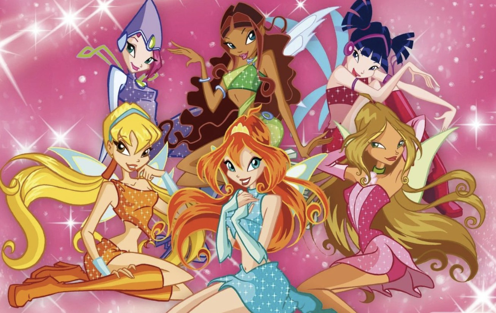

Winx
Winx , 2004 yılında İtalyan yapımı bir animasyon televizyon dizisidir. Dizi, Bloom adlı genç bir kızın sihirli güçlerini keşfetmesi ve Winx adlı sihirli bir grup oluşturması etrafında döner. Ana karakterler arasında Bloom, Stella, Flora, Musa, Tecna ve Aisha bulunur.
Winx konusu genellikle Winx'in arkadaşlarıyla birlikte yaşadığı maceralar ve sihirli olaylar etrafında döner.
Winx yayınlandığı dönem ve günümüzde de halen popülerliğini koruyan geniş bir hayran kitlesine sahip olmayı başarmış ikonik bir çizgi filmdir.